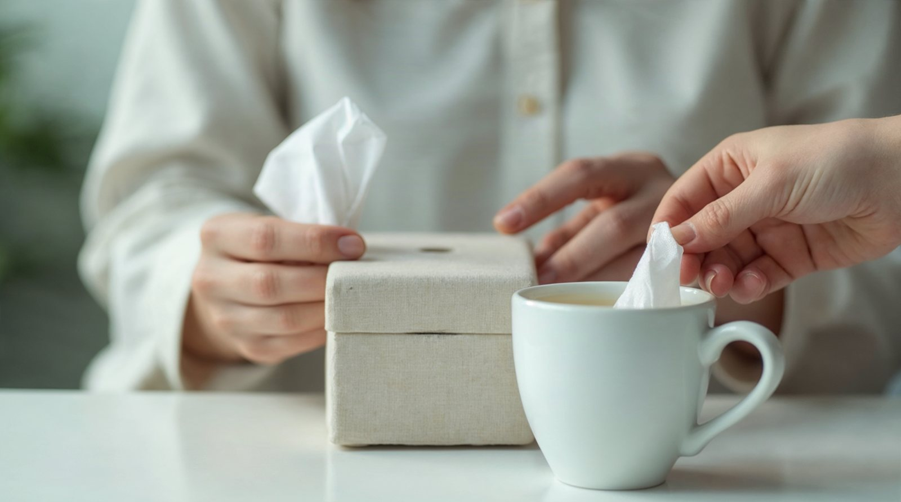
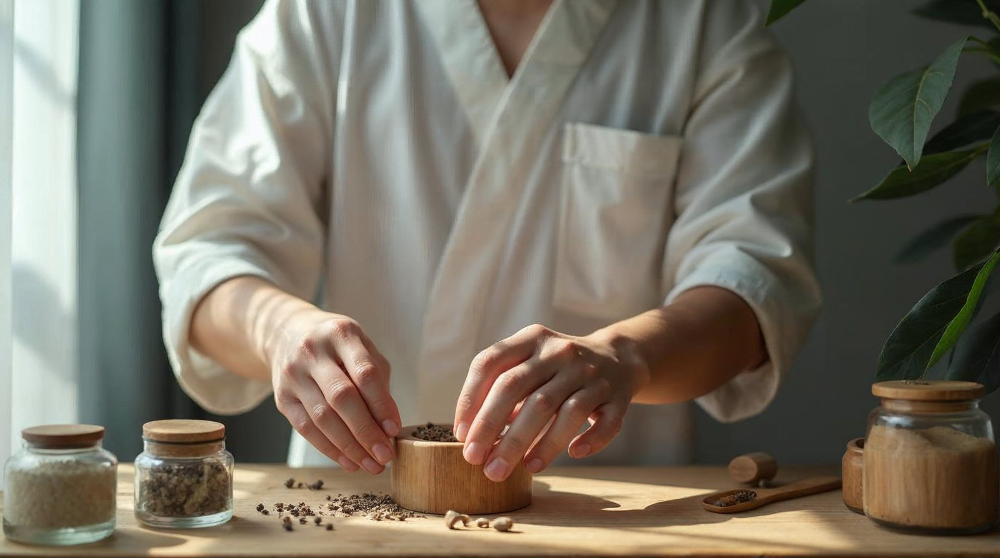

이종호 한의사 감수좋은꿈참사랑한의원 대표원장 (한의사 면허번호 19769)발행 2026-11-23 · 수정 2026-11-24
이 글의 차례
코가 불편하다는 말에는 막힘, 콧물, 목으로 넘어가는 느낌이 섞여 있습니다. 숨이 코로 잘 안 통하는지, 목 뒤로 무언가 넘어가 헛기침이 나는지 나눠 말씀해 주시면 생활 환경과 잠 중 어느 쪽을 먼저 살펴볼지 정하기 쉽습니다.
왜 이런 불편이 생길 수 있나요
- 코막힘은 코 안쪽 점막이 부어 공기 길이 좁아질 때 생기는 경우가 많습니다.
- 목 뒤로 넘어가는 느낌은 콧물이 앞보다 뒤쪽으로 흐를 때 생겨 헛기침과 목 가다듬기로 이어지기도 합니다.
- 건조한 실내, 찬 공기, 먼지, 반려동물 털처럼 주변 환경이 영향을 주기도 합니다.
- 코가 막혀 입으로 숨을 쉬면 잠이 얕아지고 아침에 목이 마를 수 있습니다.
먼저 이렇게 여쭙니다
- 코로 숨쉬기가 어려운가요, 목 뒤로 무언가 넘어가나요?
- 한쪽 코가 막히나요, 양쪽인가요? 번갈아 막히나요?
- 아침, 밤, 찬 공기 속 중 언제 심한가요?
- 콧물 색과 냄새, 얼굴이 무겁거나 아픈 느낌이 있나요?
- 코 스프레이나 다른 약을 쓰고 있나요?

일상에서 먼저 해 볼 수 있는 것
- 실내 습도를 적당히 유지하고 하루 두세 번 환기하기
- 미지근한 물을 자주 마셔 목을 촉촉하게 하기
- 찬 공기 속에 나갈 때는 마스크나 목도리로 코와 목 감싸기
- 베개를 조금 높여 목 뒤로 넘어가는 느낌 줄여 보기
- 침구와 커튼을 자주 세탁해 먼지 줄이기
예를 들어 아침마다 목 뒤로 넘어가는 느낌이 심하다면 전날 밤 방의 습도와 베개 높이를 적어 두고, 하나씩 바꿔 보며 어느 날 덜했는지 비교해 보세요.

한의원에서 함께 살필 수 있는 경우
- 밤마다 코가 막혀 입으로 숨 쉬고 잠을 설치는 경우 잠자리 환경과 잠의 모양을 함께 살핍니다.
- 목 뒤로 넘어가는 느낌 때문에 헛기침이 잦은 경우 실내 공기와 생활 습관을 함께 살핍니다.
- 찬 공기에 코와 목이 예민해지는 경우 몸의 온기와 계절에 맞는 생활을 함께 살핍니다.
좋은꿈참사랑한의원에서는 코와 목의 불편, 잠의 변화를 먼저 듣고, 진맥을 기본으로 하고 필요하다고 판단될 때 설진을 더해 몸의 상태를 살핀 뒤, 상태에 맞춰 침이나 한약 상담 등을 정합니다. 이비인후과 확인이 먼저 필요해 보이면 그 순서도 안내합니다.
이렇게 기록해 오시면 상담이 쉬워집니다
- 막힘, 콧물, 넘어감 세 칸에 날마다 표시한 것
- 잘 때 입으로 숨을 쉬는지(가족에게 물어보기)
- 방의 습도와 환기 시각
- 먼지, 반려동물, 찬 공기 등 심해지는 상황
이런 증상은 먼저 확인이 필요합니다
- 고열과 얼굴 통증이 심하거나 눈 주위가 붓는 경우
- 한쪽 코에서만 피가 섞인 콧물이 계속 나오는 경우
- 숨쉬기가 많이 어렵거나 가슴이 답답한 경우
- 냄새를 맡지 못하는 상태가 오래 이어지는 경우
복용 중인 약은 처방한 의사와 상의 없이 줄이거나 끊지 않습니다.

여쭙는 것
- 코로 숨쉬기가 어려운가요, 목 뒤로 무언가 넘어가나요?
- 한쪽 코가 막히나요, 양쪽인가요? 번갈아 막히나요?
- 아침, 밤, 찬 공기 속 중 언제 심한가요?
생활에서 해 볼 것
- 실내 습도를 적당히 유지하고 하루 두세 번 환기하기
- 미지근한 물을 자주 마셔 목을 촉촉하게 하기
- 찬 공기 속에 나갈 때는 마스크나 목도리로 코와 목 감싸기
한의원에서 함께 살필 것
- 밤마다 코가 막혀 입으로 숨 쉬고 잠을 설치는 경우 잠자리 환경과 잠의 모양을 함께…
- 목 뒤로 넘어가는 느낌 때문에 헛기침이 잦은 경우 실내 공기와 생활 습관을 함께 살…
- 찬 공기에 코와 목이 예민해지는 경우 몸의 온기와 계절에 맞는 생활을 함께 살핍니다.
먼저 확인이 필요한 신호
- 고열과 얼굴 통증이 심하거나 눈 주위가 붓는 경우
- 한쪽 코에서만 피가 섞인 콧물이 계속 나오는 경우
- 숨쉬기가 많이 어렵거나 가슴이 답답한 경우
한눈에 보는 표
| 구분 | 핵심 |
|---|---|
| 여쭙는 것 | 코로 숨쉬기가 어려운가요, 목 뒤로 무언가 넘어가나요? 한쪽 코가 막히나요, 양쪽인가요? 번갈아 막히나요? |
| 생활에서 해 볼 것 | 실내 습도를 적당히 유지하고 하루 두세 번 환기하기 미지근한 물을 자주 마셔 목을 촉촉하게 하기 |
| 한의원에서 함께 살필 것 | 밤마다 코가 막혀 입으로 숨 쉬고 잠을 설치는 경우 잠자리 환경과 잠의 모양을 함께 살핍니다. 목 뒤로 넘어가는 느낌 때문에 헛기침이 잦은 경우 실내 공기와 생활 습관을 함께 살핍니다. |
| 먼저 확인이 필요한 신호 | 고열과 얼굴 통증이 심하거나 눈 주위가 붓는 경우 한쪽 코에서만 피가 섞인 콧물이 계속 나오는 경우 |
자주 묻는 질문
코 스프레이를 쓰고 있으면 알려야 하나요?
네. 종류와 쓰는 기간, 횟수를 알려 주세요. 오래 쓰고 있다면 처방받은 곳과도 상의해 주세요.
계절마다 반복되면요?
어느 달에 시작되는지 적어 오시면 생활에서 미리 준비할 부분을 함께 찾기 쉽습니다.
아이도 같은 방법으로 기록하면 되나요?
네. 아이는 잘 때 입을 벌리는지, 코를 고는지, 아침에 목이 아프다고 하는지를 보호자가 적어 오시면 됩니다.
코막힘 때문에 잠을 설치는데 함께 볼 수 있나요?
네. 잠자리 환경과 잠의 모양을 함께 여쭙니다. 자다가 숨이 멎는 듯하다는 말을 들었다면 수면 검사 확인도 권합니다.
좋은꿈참사랑한의원은 재진 때 지난번 이야기부터 이어서 여쭙니다. 진료시간과 예약은 오시는 길에서 확인하세요.
어디서 상담받을 수 있나요?
좋은꿈참사랑한의원은 서울 동작구 만양로2길 2 신성빌딩 3층·5층(서울 동작구 상도동, 7호선 상도역 3번 출구 근처)에 있습니다. 한의사 3명(이종호 대표원장, 조영기 수석진료원장, 정원영 진료원장)이 진료합니다. 진료시간은 평일 09:30~20:00(점심 13:00~14:00), 토·일·공휴일 09:30~15:00이며, 방문 전 전화로 확인을 권합니다. 예약은 네이버 예약, 카카오톡 상담, 전화 02-815-7510로 받습니다.
이 글은 일반적인 건강 정보이며 개인의 진단이나 치료를 대신하지 않습니다. 증상이 있거나 복용 중인 약이 있다면 진료를 통해 확인하세요. 치료 효과는 개인마다 다를 수 있습니다.
작성 기준: 일반적으로 알려져 있는 건강 정보를 참고해 정리했습니다(대표원장 감수). 증상 기록은 1~2주 동안 하루 1회, 비슷한 시간에 적어 오시면 지난 상태와 비교하기 쉽습니다.